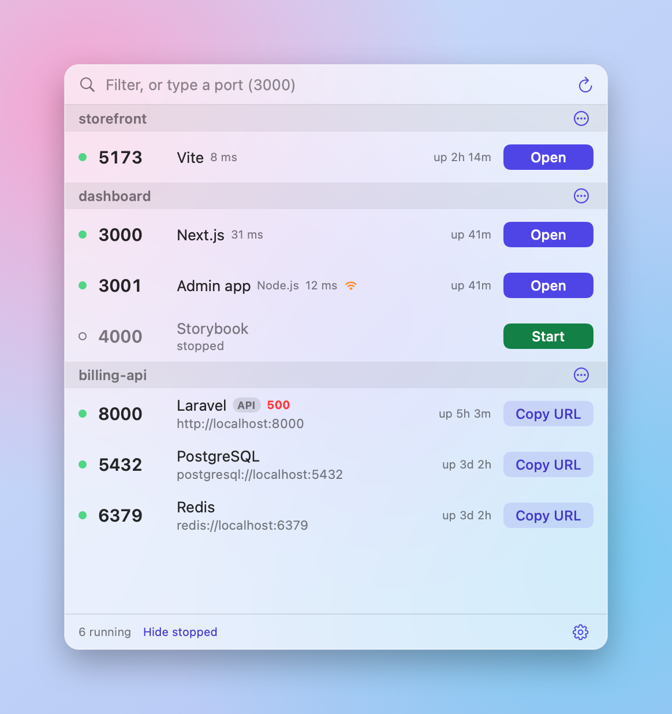
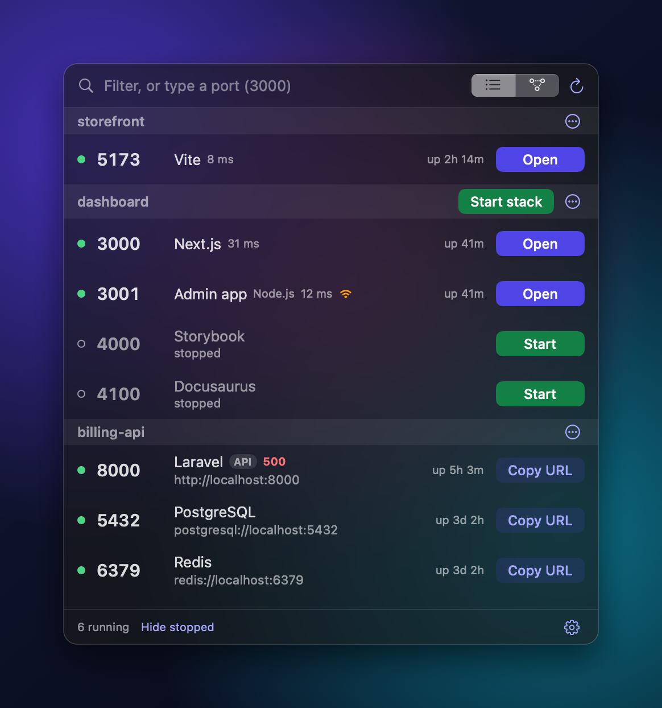

Every local port, with its project.
A free Mac menu bar app that shows what is running on localhost. Open, restart, read logs, share or stop any dev server in one click.
Download for Macbrew install --cask destucr/tap/switchboard


What it does
Ports grouped by project
Vite, Next.js, Laravel, Django, Docker, Postgres, Redis and more, each under the project folder it came from.
The right button for each server
Open for web pages. Copy URL for APIs and databases. Stop and Restart for all of them.
See how servers connect
A map shows which server talks to which, and warns you before you stop something others depend on.
Start a whole project
Stopped servers stay listed. One click starts the project again, in the order its servers depend on each other.
Share your stack
Save a switchboard.json in the repo. A teammate adds the folder and presses Start stack.
Port conflicts
Type 3000 to see who has it. Start tells you when a port is taken and offers the next free one. Change a running server's port, and undo it if it goes wrong.
Install
brew install --cask destucr/tap/switchboard
Needs macOS 14 or later. The app is not notarized yet, so macOS blocks it the first time. Open System Settings, go to Privacy & Security and click Open Anyway, or run xattr -dr com.apple.quarantine /Applications/Switchboard.app once. The cask also installs a switchboard command for status, start and stop from the terminal.
Questions
How do I see what is using port 3000 on a Mac?
Type 3000 in Switchboard's filter box. It shows whether the port is free and, if not, which process and project holds it. In Terminal the equivalent is lsof -i :3000.
How do I kill the process on a port on macOS?
Click Stop on the server's row. In Terminal: kill $(lsof -t -i :3000).
Does it work with Docker?
Yes. Containers with published ports are listed next to your other servers, and you can stop, restart and read their logs.
Is it free?
Yes. It is open source and installs with Homebrew.